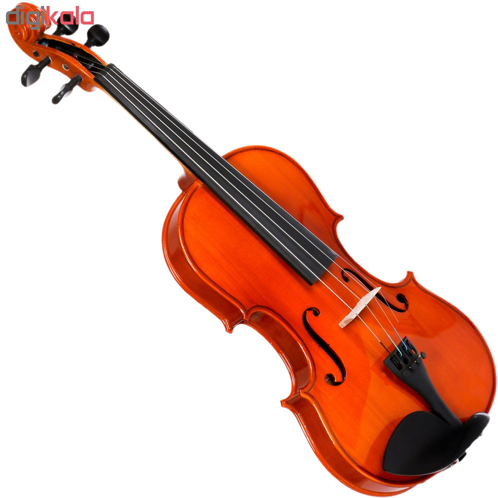
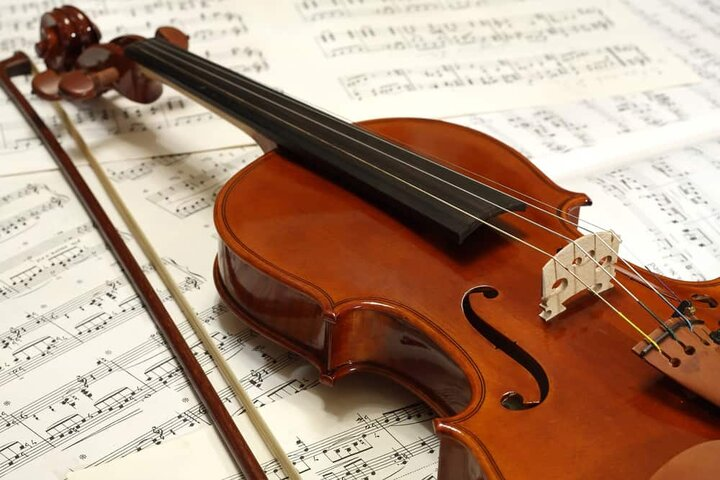
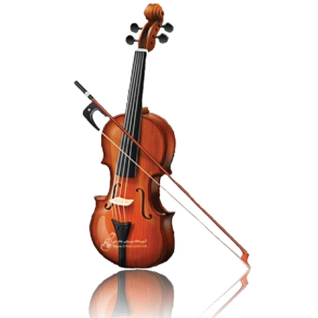

موسیقی رنگ صدای زندگی
استادان ساز ویولن آموزشگاه طنین


استاد دوستوندی
ساز تخصصی:
ویولن
سابقه تدریس:
15 سال
توضیحات کوتاه:
نوازنده و مدرس ساز ویولن
عضو خانه ی موسیقی در کانون نوازندگان ایرانی به عنوان عضو وابستهی درجهی 1 (کد عضویت 13704)
نوازندگی در گروه های موسیقی کلاسیک ایران و نواختن آثار آهنگسازان موسیقی ایران
اجرا و مشارکت در ضبط قطعات آهنگسازان معاصر ایران
اجرای قطعات سولو برای ویولن
اجرای بداههپردازی بر اساس ردیف موسیقی ایران
تدریس نوازندگی ساز ویولن و گروهنوازی موسیقی ایرانی

استاد جلیلیان
ساز تخصصی:
ویولن
سابقه تدریس:
18 :سال
توضیحات کوتاه:
دوره ها:
دوره هارمونی
نوازندگی ویولن
نوازندگی گیتار
برگزاری کنسرت بین هنرجویان

استاد باقری
ساز تخصصی:
پیانو و ویولن
سابقه تدریس:
8 سال
توضیحات کوتاه:
اجراها:
همکاری با گروه ارکستر آکادمیک تهران و اجرا در تالار وحدت و حوزه هنری
همکاری با باشگاه موسیقی ارسباران و اجرا در فرهنگسرای ارسباران
همکاری با سایر گروه های خصوصی و دانشجویی
• سوابق تدریس:
آموزشگاه طنین (شنوا ها)
موسسه موسیقی نیاکام (موسیقی درمانی برای کودکان کم شنوا)
برگزاری کنسرت برای هنرجوها